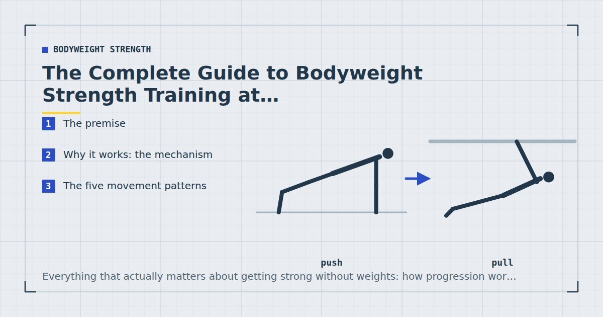

Bodyweight Strength
The Complete Guide to Bodyweight Strength Training at Home
Everything that actually matters about getting strong without weights: how progression works when you cannot add load, the five patterns a programme needs, and an honest account of where this approach runs out.

Bodyweight training gets treated as the compromise you accept when you cannot get to a gym. It is a reasonable prejudice, and it is mostly wrong — but the reasons it is wrong are specific, and understanding them is what separates people who make years of progress at home from people who do push-ups for six months and conclude it does not work.
This guide covers the mechanism, the structure, and the honest limits. It assumes you have a floor, some furniture, and no equipment.
The premise
Strength training works by asking a muscle to produce force against a resistance it finds difficult, repeatedly, and then providing enough recovery for it to adapt. A barbell is an extremely convenient way to supply that resistance, because you can add two and a half kilos whenever you want.
Bodyweight training supplies the resistance differently: by arranging your body so a given muscle has to move a large fraction of your mass through a difficult range. The resistance is fixed at your own weight, which sounds like a fatal limitation and turns out not to be — provided you understand what to manipulate instead.
Why it works: the mechanism
Three findings do most of the work in justifying this approach, and they are worth knowing rather than taking on trust.
Light loads build muscle if the sets are hard
The single most relevant piece of evidence. A systematic review and meta-analysis comparing low-load with high-load resistance training found comparable hypertrophy between the two when sets were taken close to failure.1 Strength gains favoured heavier loads, but muscle growth did not differ meaningfully.
This matters because your bodyweight is, in strength-training terms, a light load. The finding says that need not prevent muscle growth — the condition is that the sets are genuinely difficult.
Weekly volume has a dose-response relationship
A meta-analysis of weekly resistance training volume found more hard sets per week produced more hypertrophy, up to a point of diminishing returns.2 This is load-agnostic: it applies whether the resistance comes from a barbell or from your own mass.
The practical consequence is that accumulating enough weekly sets matters more than what any single session contains.
You do not need absolute failure
Research comparing sets taken to failure with sets stopped short suggests stopping a few repetitions early preserves most of the growth stimulus while costing considerably less recovery.3
Useful, because taking every bodyweight set to true failure is exhausting and slow — a set of push-ups to genuine failure can take ninety seconds and leave you unable to do much for several minutes.
The five movement patterns
Organise training by movement pattern rather than by muscle. Five patterns cover essentially everything you can train without equipment, and organising this way makes gaps immediately visible.
| Pattern | Main exercises | Trains |
|---|---|---|
| Squat | Squat, split squat, pistol | Quads, glutes |
| Hinge | Glute bridge, single-leg RDL | Glutes, hamstrings |
| Push | Push-up, dip, pike push-up | Chest, shoulders, triceps |
| Pull | Row, pull-up | Back, biceps, rear delts |
| Brace | Plank, dead bug, side plank | Trunk |
Squat
The knee-dominant lower-body pattern. Technique details — depth, knee position, heel lift — are covered in bodyweight squat form. Two-legged squats stop being a strength stimulus quickly, which is why single-leg variations matter so much: Bulgarian split squats are the workhorse, and the pistol squat is the endpoint.
Hinge
The hip-dominant pattern, and the one most home routines omit entirely. Glute bridges and single-leg Romanian deadlifts are the accessible versions — see glute exercises at home. A programme of squats and lunges with no hinge trains the front of the legs and neglects the back.
Push
The best-served pattern in bodyweight training, since pushing your own mass away from the floor requires nothing. Start with correct push-up form, use the incline progression ladder to reach a floor push-up, then continue with the harder chest progressions. Vertical pushing is covered by the bodyweight shoulder workout, and dips at home add the heaviest pressing option available.
Pull
The pattern that genuinely needs something to pull against, and consequently the one that gets skipped. Rows at home covers seven options using furniture you already own; back exercises with no equipment is honest about what is achievable with literally nothing; and how to do your first pull-up is the long-term goal.
Brace
The trunk's real job is resisting movement rather than producing it, which is the argument in core training without sit-ups. The plank progression chart handles the anti-extension side.
Direct arm work sits outside these five and is largely optional, since pushing and pulling already train the arms substantially — the honest version is in the bodyweight arm workout.
Progression without load
This is the central problem of bodyweight training, and there are five solutions. Use them roughly in this order.
1. Get closer to failure. Free, instant, and the most neglected. Most people stop sets at discomfort, which is often five or more repetitions short of genuine failure. Moving from that to within one to three repetitions is a large increase in stimulus that costs nothing.
2. Slow the lowering phase. A three or four-second descent makes any movement significantly harder without changing anything else. The cheapest real progression available.
3. Add a pause. Two seconds at the hardest point removes the stretch reflex, so the muscle has to generate force from a dead stop.
4. Change leverage. Elevate the feet in a push-up. Move the feet further forward in a row. Lengthen the lever in a plank. This is where most of the long-term runway lives.
5. Reduce limbs. Two legs to one, two arms toward one. The largest single jump available, and the endpoint of most progressions.
The complete ladder for every pattern is set out in bodyweight exercise progressions.
The question is never “how do I do more push-ups?” It is “how do I make this push-up harder?”
Effort: the variable that decides everything
If you take one thing from this guide, take this.
With a barbell, load carries the intensity. You can perform a heavy set with moderate effort and still receive a strong stimulus, because the weight is doing the work of making it hard.
With bodyweight, load is fixed and low. Effort is therefore the only intensity variable you have. A set of push-ups stopped at mild discomfort is close to useless; the same set taken to two repetitions from failure is genuinely productive. The difference between those two sets is entirely psychological, and it is the single largest determinant of whether home training works for you.
Practically: leave one to three repetitions in reserve on working sets, and take the final set of each exercise closer than that. If you cannot tell how close to failure you are, occasionally take a set to actual failure to calibrate — most people discover they were considerably further away than they thought.
How much, how often
Roughly ten to twenty hard sets per muscle group per week is the productive range for most people, with beginners benefiting from the lower end and trained individuals from the higher.
Spread that across two or three sessions per muscle group. Meta-analytic evidence on training frequency found that when weekly volume is equated, higher frequency produces similar or slightly better hypertrophy.4 There is no need to train a muscle group daily, and there is a real cost to doing so.
Three sessions a week is the sweet spot for most people training at home: enough frequency to hit everything two or three times, enough slack that a missed evening does not wreck the week. The full argument is in how many days a week should you work out.
Building a programme
A complete session contains one movement from each of the five patterns. That is the whole design rule.
A reasonable default session:
- Squat pattern — 3–4 sets
- Push pattern — 3–4 sets
- Pull pattern — 3–4 sets
- Hinge pattern — 3 sets
- Brace pattern — 2–3 sets
Order matters: hardest and most technical first while you are fresh, largest muscle groups next, small and isolation work last. The reasoning is in how to structure a home workout.
Run the same session for at least six to eight weeks, progressing the difficulty of the movements within it rather than swapping exercises. Changing the exercises frequently removes your ability to tell whether anything is improving, which is the only feedback the programme gives you.
For a written-out plan, the 4-week beginner plan is the starting point and the three-day split is what follows it.
The one gap, and how to close it
Bodyweight training has exactly one structural hole: pulling. Everything else can be done with a floor and some furniture.
You can partially close it for free — inverted rows under a dining table are genuinely effective, and a towel around a door handle works. But the honest position is that a doorway pull-up bar or a set of resistance bands, either costing less than a month of gym membership, transforms this pattern from a workaround into a properly trainable one.
If you buy one thing, buy that. The priority order for everything else is in the minimalist home gym guide.
Where this approach runs out
Three genuine limitations, stated plainly.
Legs. The clearest gap. Legs are strong relative to bodyweight, so even advanced single-leg variations are a modest load for a well-trained person. Upper-body pushing and pulling scale to genuinely difficult variations; legs scale less far.
Maximal strength. Very low repetition work with near-maximal loads is not available, so absolute strength will lag what the same person could achieve with a barbell. If your goal is a heavy squat number, this is not the route.
Advanced progressions become skill-limited. A one-arm push-up requires trunk and stabiliser strength that may become the constraint before the chest does, at which point you are no longer training the muscle you meant to.
For most people that ceiling sits one to three years of consistent training away, and the detailed evidence is in can you build muscle with bodyweight only. It is worth knowing about and not worth worrying about in year one.
A worked example: twelve months of one exercise
Abstract principles are easier to accept than to apply, so here is what the five progression levers actually look like applied to a single movement over a year. This is roughly the path a beginner who cannot yet do a floor push-up would take.
| Months | Working set | Lever being used |
|---|---|---|
| 1–2 | 3 × 12 counter push-ups | Leverage (incline height) |
| 3–4 | 3 × 12 chair push-ups | Leverage |
| 5–6 | 3 × 8 floor push-ups | Leverage |
| 7 | 3 × 12 floor push-ups | Volume and proximity to failure |
| 8 | 3 × 8, three-second descent | Tempo |
| 9–10 | 3 × 10 feet elevated | Leverage again |
| 11 | 3 × 8 deficit push-ups | Range of motion |
| 12 | 3 × 6 archer push-ups each side | Reducing limbs |
Notice what does not happen anywhere in that table: the repetitions never climb past about fifteen, and the exercise is never swapped for a different one. Every increase in difficulty comes from one of the five levers applied to the same fundamental movement.
Notice also how much runway a single exercise has. Someone twelve months in is doing archer push-ups, which most people would consider an advanced movement, having started from a kitchen counter. The same structure applies to every one of the five patterns, which is why the ladders in bodyweight exercise progressions are worth working through in order rather than jumping around.
The pace above is deliberately unhurried. Someone progressing faster than this is either fitter at the start or, more commonly, moving on before the graduation criteria are genuinely met — which is the usual reason people stall at the floor push-up and stay there.
The eight mistakes that stall people
1. Never approaching failure. The biggest one, by a distance. Covered above and worth repeating.
2. Chasing repetitions instead of difficulty. Fifty push-ups is a cardiovascular event. Ten hard ones is a training set.
3. Skipping the pull pattern. It needs equipment, so it gets dropped, and six months later the imbalance is obvious.
4. Skipping the hinge. Squats and lunges are knee-dominant. Without bridges or Romanian deadlifts, the posterior chain goes untrained — and that is the half most affected by sitting.
5. Staying on two legs. The single biggest limiter on lower-body progress. Single-leg work is not an advanced option; it is the point at which leg training starts.
6. Changing the programme constantly. Variety feels productive and destroys your ability to measure anything.
7. Training every day. Adaptation happens during recovery. Daily hard training produces steadily worsening sessions.
8. Ignoring protein and sleep. Meta-analytic evidence shows protein intake supports muscle gains alongside resistance training,5 and sleep has documented effects on training performance.6 Both get overlooked in favour of programme tinkering that matters less.
Where to start
If you are new, run the 4-week beginner plan. It uses easier variations of all five patterns and builds the habit before the volume.
If you have trained before, start with the three-day split and use the progression ladders to set each movement at the right difficulty.
If you want a single session today, the 15-minute full-body workout covers four of the five patterns and takes fifteen minutes.
And if the honest problem is not knowing what to do but repeatedly not doing it, none of the above is the fix. Start with how to actually stick to a home workout habit instead.
Frequently asked questions
Is bodyweight training enough to build strength?
Yes, within limits. A meta-analysis comparing low-load and high-load training found comparable muscle growth when sets were taken close to failure, though strength gains favoured heavier loads. For most people training at home, the ceiling is one to three years away.
How do you progress bodyweight exercises without weights?
Five levers, in rough order: get closer to failure, slow the lowering phase, add a pause at the hardest point, change leverage by elevating the feet or lengthening the lever, and reduce the number of limbs sharing the load.
What are the five movement patterns?
Squat, hinge, push, pull and brace. Organising training by pattern rather than by muscle makes gaps immediately visible — most home routines are missing a hinge, a pull, or both.
How many days a week should I do bodyweight training?
Three is the sweet spot for most people training at home. It provides enough frequency to train every pattern two or three times a week while leaving four days of slack for life to interfere.
Do I need any equipment for bodyweight training?
Only for pulling, which is the one structural gap. Inverted rows under a table or a towel around a door handle work, but a doorway pull-up bar or resistance bands turn it from a workaround into a properly trainable pattern.
Why is bodyweight leg training so limited?
Legs are strong relative to bodyweight, so even advanced single-leg variations are a modest load for a well-trained person. This is the clearest limitation of the approach, and it is why single-leg work matters so much.
How close to failure should bodyweight sets be?
One to three repetitions in reserve on working sets, with the final set of each exercise taken closer. Because load is fixed and light, effort is the only intensity variable available.
Sources and further reading
- Schoenfeld BJ, Grgic J, Ogborn D, Krieger JW. “Strength and Hypertrophy Adaptations Between Low- vs. High-Load Resistance Training: A Systematic Review and Meta-analysis.” Journal of Strength and Conditioning Research, 2017;31(12):3508–3523. PubMed.
- Schoenfeld BJ, Ogborn D, Krieger JW. “Dose-response relationship between weekly resistance training volume and increases in muscle mass: A systematic review and meta-analysis.” Journal of Sports Sciences, 2017;35(11):1073–1082. PubMed.
- Vieira AF, Umpierre D, Teodoro JL, et al. “Effects of Resistance Training Performed to Failure or Not to Failure on Muscle Strength, Hypertrophy, and Power Output: A Systematic Review With Meta-Analysis.” Journal of Strength and Conditioning Research, 2021. PubMed.
- Schoenfeld BJ, Ogborn D, Krieger JW. “Effects of Resistance Training Frequency on Measures of Muscle Hypertrophy: A Systematic Review and Meta-Analysis.” Sports Medicine, 2016;46(11):1689–1697. PubMed.
- Morton RW, Murphy KT, McKellar SR, et al. “A systematic review, meta-analysis and meta-regression of the effect of protein supplementation on resistance training-induced gains in muscle mass and strength in healthy adults.” British Journal of Sports Medicine, 2018;52(6):376–384. PubMed.
- Bonnar D, Bartel K, Kakoschke N, Lang C. “Sleep Interventions Designed to Improve Athletic Performance and Recovery: A Systematic Review of Current Approaches.” Sports Medicine, 2018;48(3):683–703. PubMed.
- World Health Organization. WHO Guidelines on Physical Activity and Sedentary Behaviour. 2020.
Comments
Comments are not enabled yet. Add a hosted comment embed (Disqus, Commento, Giscus) inside this container when you are ready.